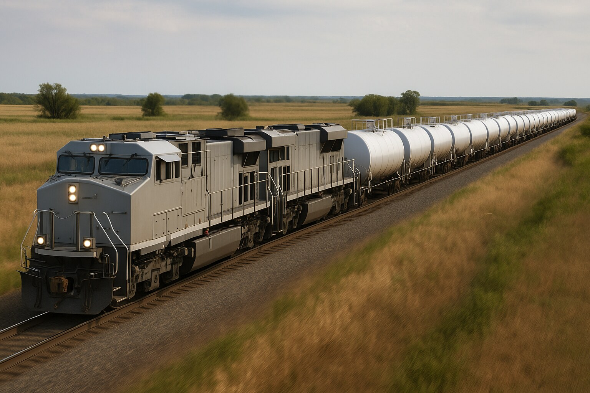

Steel Wheel Logistics sources, places, and renews railcars for shippers who need equipment without building an equipment desk.
A railcar broker sits between the shippers who need cars and the lessors, lessees, and owners who have them. The railcar market is thin and mostly private: the good cars move by phone call, not by listing, and the rate you get depends on who you know and how well you can describe what you need. Steel Wheel Logistics works that market for you. We do not own a fleet, so we have no reason to steer you toward one lessor’s cars over another’s.

Scope is quoted before work starts. Market figures on this site are indicative; every rate you sign comes from the lessor or sublessor, not from us.
Run the numbers yourself before you call. Every tool below is free and built from published market data.
A railcar broker matches shippers who need railcars with the lessors, lessees, and owners who have them. Steel Wheel Logistics sources lease and sublease cars for shippers who need equipment, places surplus cars for lessees who have more than they can use, reviews lease renewals against current market rates, and helps new-to-rail shippers pick the right car type before they commit. We do not own the fleet; we work the market on your behalf.
Engagement is scoped to the job: a one-time sourcing or placement assignment, a lease renewal review, or an ongoing equipment role inside an outsourced rail department. We talk through the requirement first and quote the engagement before any work starts. The market data on our lease-rate and lease-activity pages is free to use whether or not you engage us.
Yes. New-to-rail shippers are the group we work with most. We start with the commodity and the lane, confirm the car type and capacity that fit, then check the lease and sublease market for cars that are actually available in the timeframe you need. We also flag when the railroad’s own pool equipment is the better answer than a lease.